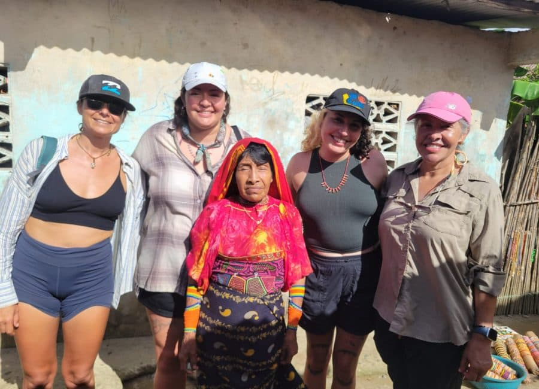


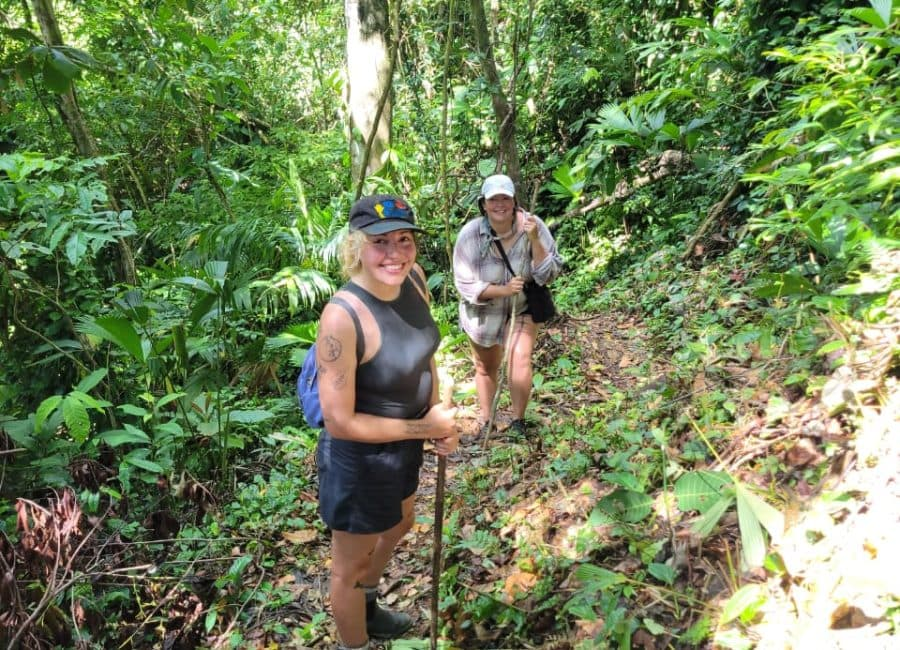
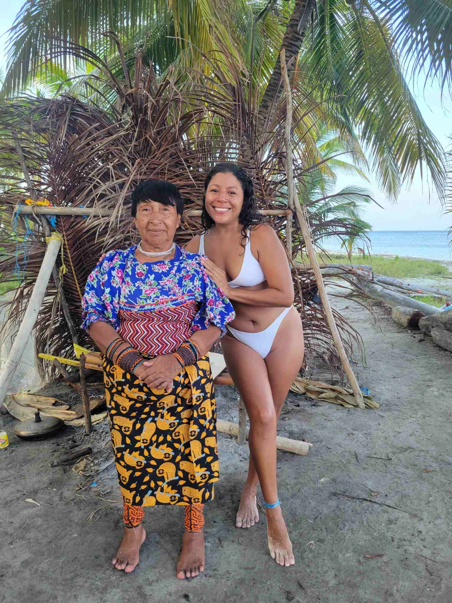
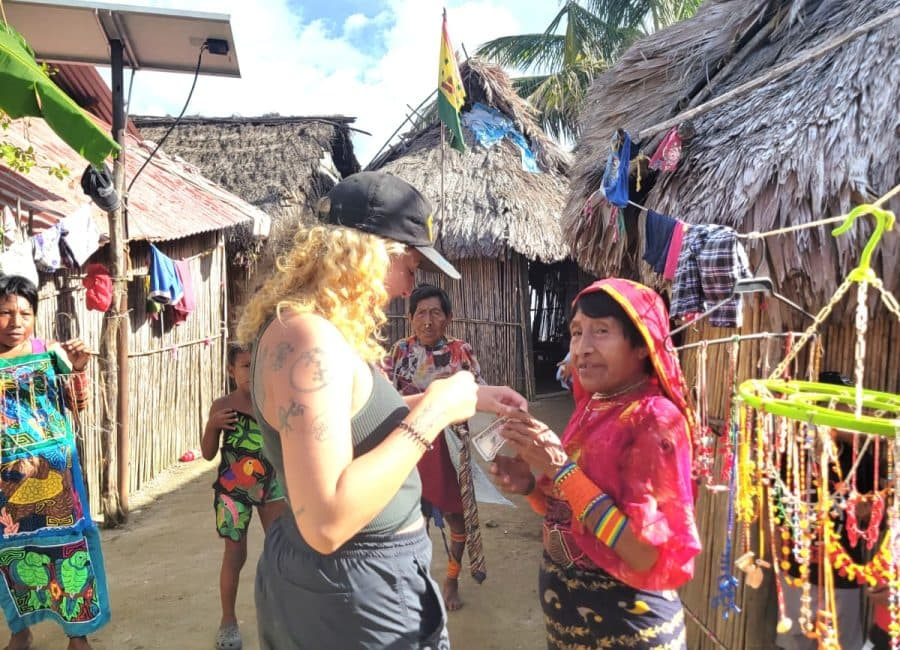

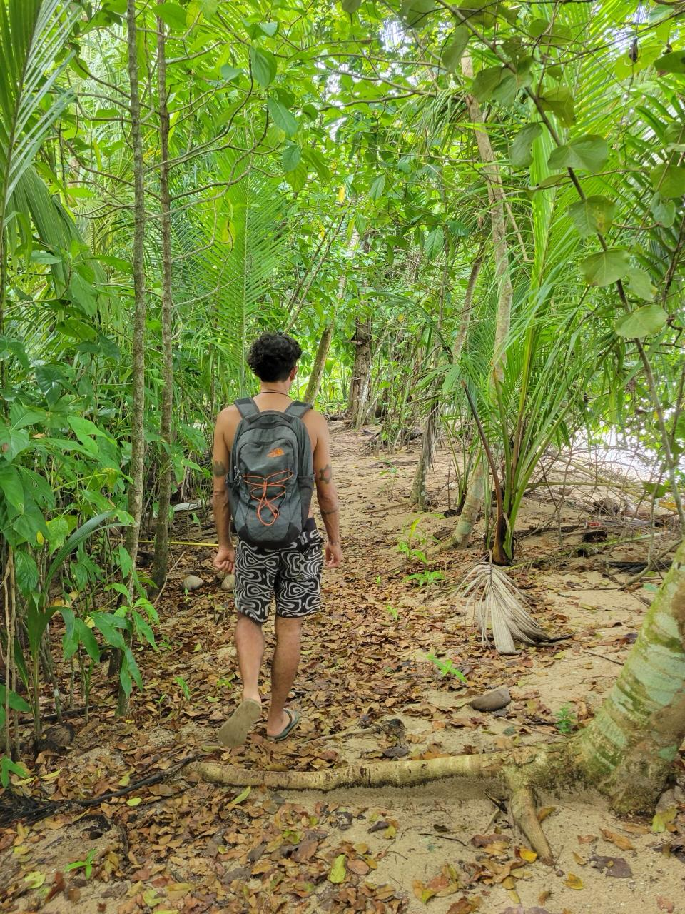
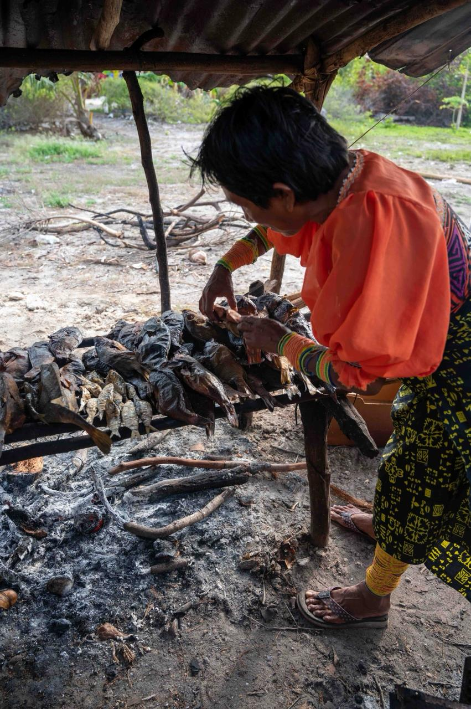
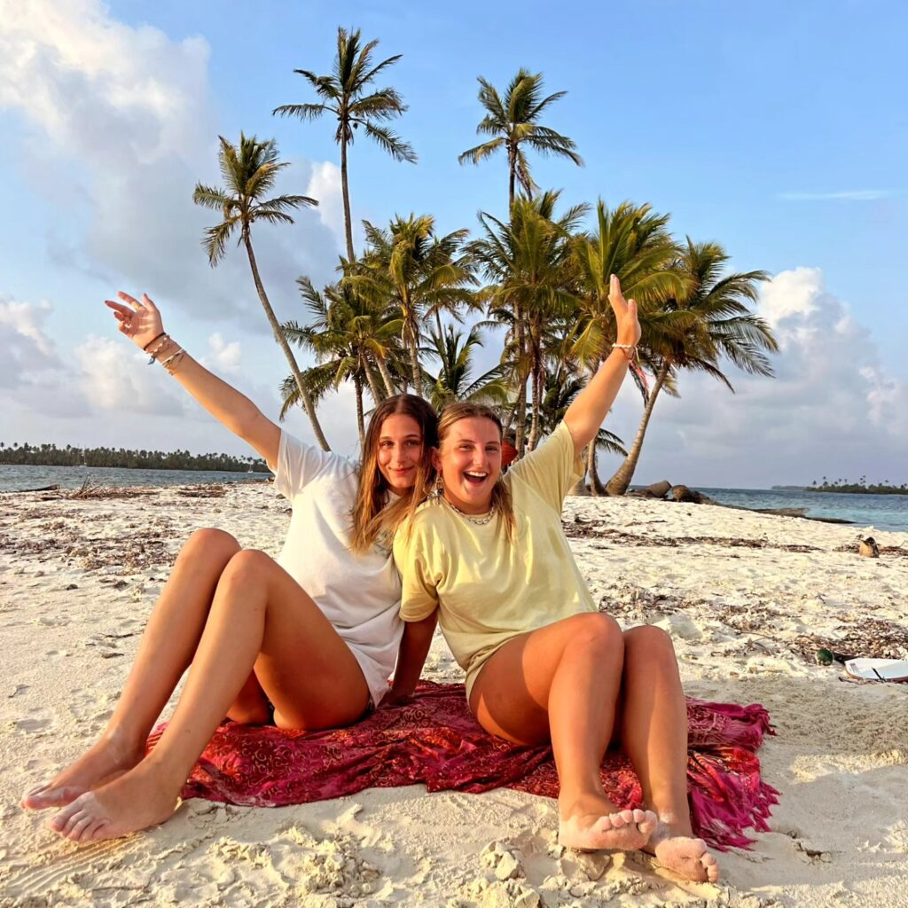
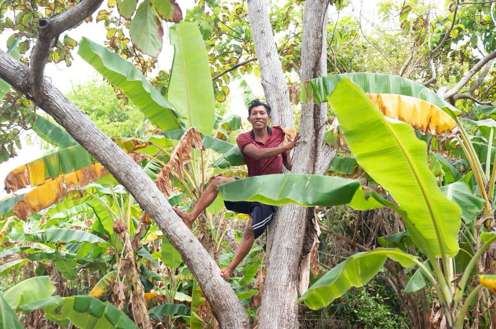
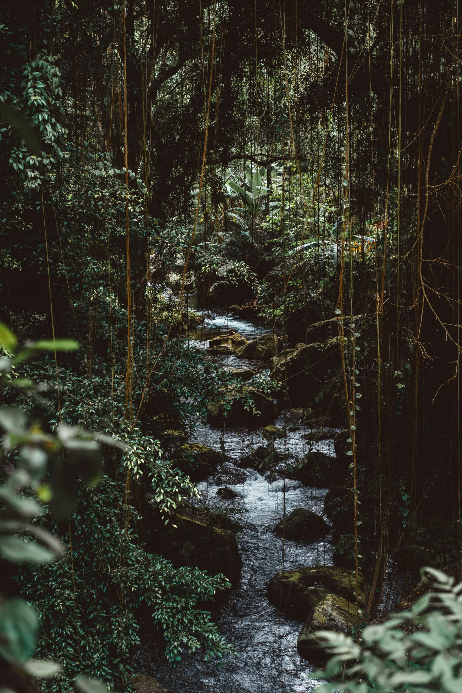
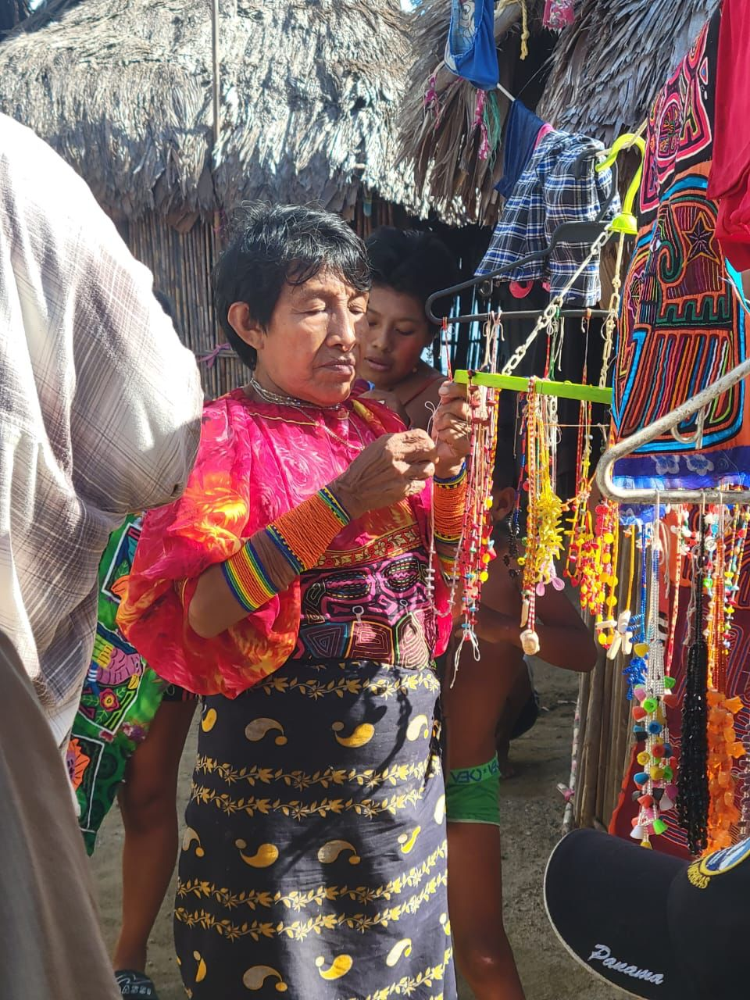
Diseñado para espíritus aventureros que quieren más que solo paraíso.
El precio del tour de un día es adicional a tu reservación de velero/cabina.
Estancia mínima en nuestro velero: 3 noches.
Reserva tu aventuraDescubre la selva y la cultura local durante una mañana llena de aventura y naturaleza, combinada con navegación por islas paradisíacas.
Tarifas del velero privado por noche:
2 huéspedes $550
3 huéspedes $700
4 huéspedes $800
2 huéspedes $140
3 huéspedes $175
4 huéspedes $200
Pagado directamente al guía local → apoya escuelas, familias monoparentales, comida y necesidades básicas.
Si se suman más personas, el precio por persona disminuye.
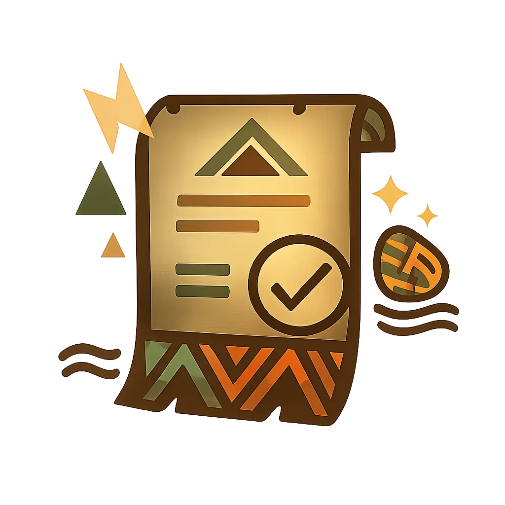
Con gusto te ayudamos a coordinar tu transporte desde la Ciudad de Panamá.
Lugares disponibles
Precio
Días










Ejemplo de un día en la selva